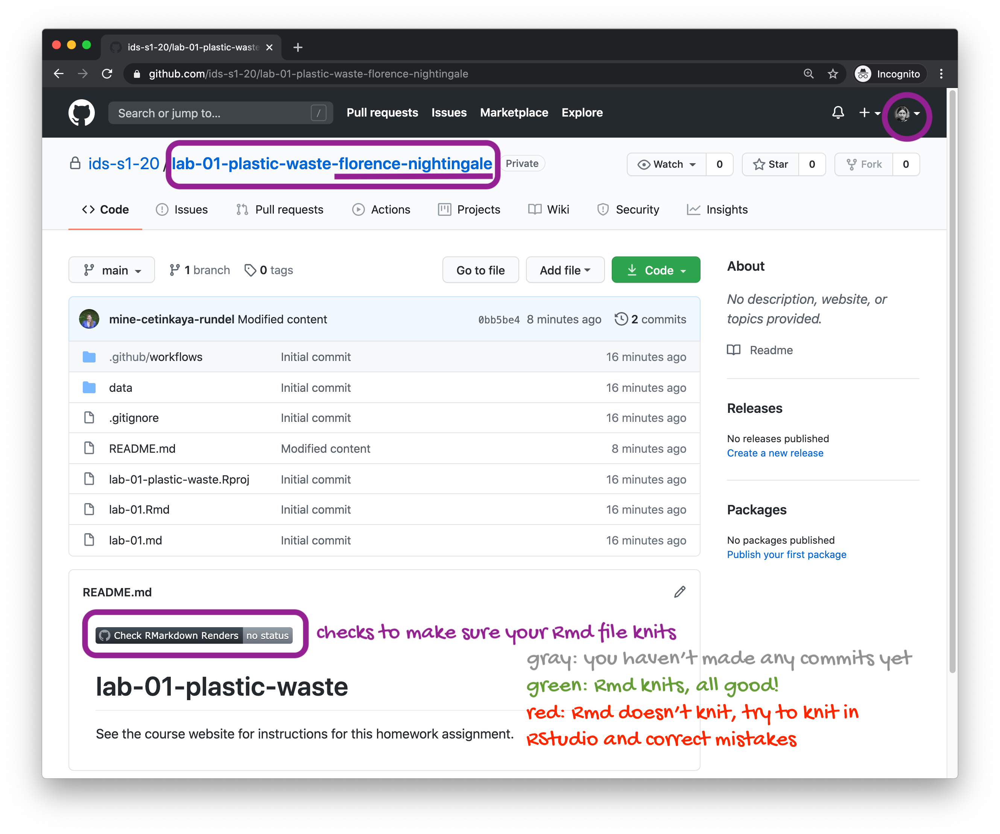
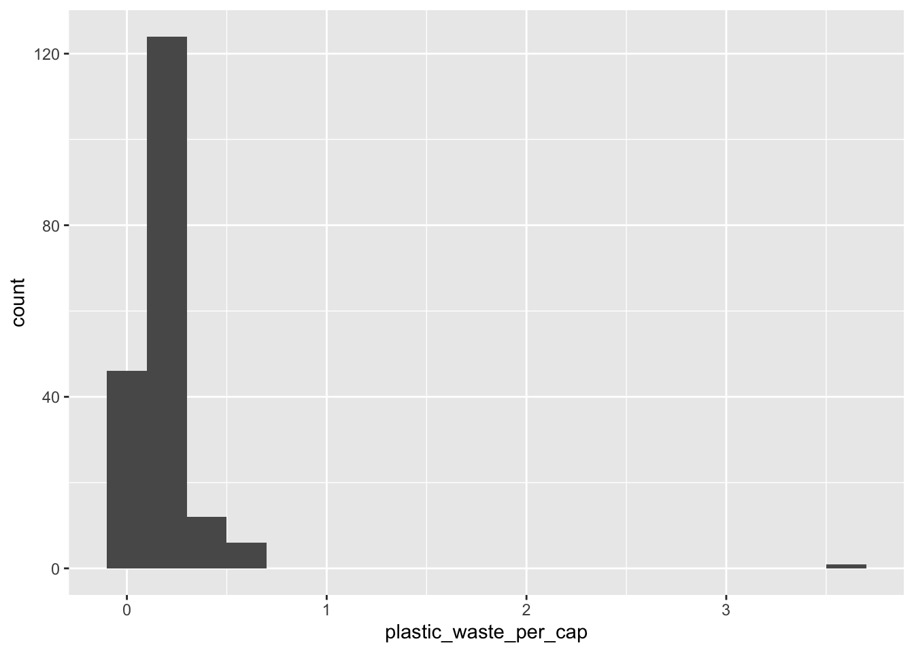

Lab 02 - Global plastic waste
Plastic pollution is a major and growing problem, negatively affecting oceans and wildlife health. Our World in Data has a lot of great data at various levels including globally, per country, and over time. For this lab we focus on data from 2010.
Additionally, National Geographic ran a data visualization communication contest on plastic waste as seen here.
Learning goals
- Visualising numerical and categorical data and interpreting visualisations
- Recreating visualizations
- Getting more practice using with R, RStudio, Git, and GitHub
Getting started
Go to the course GitHub organization and locate your assignment repo, which should be named lab-02-plastic-waste-YOUR_GITHUB_USERNAME. If you’re in the right place, it should look like the following.
Grab the URL of the repo, and clone it in RStudio. Refer to HW 00 if you would like to see step-by-step instructions for cloning a repo into an RStudio project.
First, open the R Markdown document lab-02.Rmd and Knit it. Make sure it compiles without errors. The output will be in the file markdown .md file with the same name.
Packages
We’ll use the tidyverse package for this analysis. Run the following code in the Console to load this package.
library(tidyverse)Data
The dataset for this assignment can be found as a csv file in the data folder of your repository. You can read it in using the following.
plastic_waste <- read_csv("data/plastic-waste.csv")The variable descriptions are as follows:
code: 3 Letter country codeentity: Country namecontinent: Continent nameyear: Yeargdp_per_cap: GDP per capita constant 2011 international $, rateplastic_waste_per_cap: Amount of plastic waste per capita in kg/daymismanaged_plastic_waste_per_cap: Amount of mismanaged plastic waste per capita in kg/daymismanaged_plastic_waste: Tonnes of mismanaged plastic wastecoastal_pop: Number of individuals living on/near coasttotal_pop: Total population according to Gapminder
Warm up
- Recall that RStudio is divided into four panes. Without looking, can you name them all and briefly describe their purpose?
- Verify that the dataset has loaded into the Environment. How many observations are in the dataset? Clicking on the dataset in the Environment will allow you to inspect it more carefully. Alternatively, you can type
View(plastic_waste)into the Console to do this.
**Hint:** If you're not sure, run the command `?NA` which will lead you to the documentation.- Have a quick look at the data and notice that there are cells taking the value
NA– what does this mean?
Exercises
Let’s start by taking a look at the distribution of plastic waste per capita in 2010.
ggplot(data = plastic_waste, aes(x = plastic_waste_per_cap)) +
geom_histogram(binwidth = 0.2)Warning: Removed 51 rows containing non-finite values (`stat_bin()`).
One country stands out as an unusual observation at the top of the distribution. One way of identifying this country is to filter the data for countries where plastic waste per capita is greater than 3.5 kg/person.
plastic_waste %>%
filter(plastic_waste_per_cap > 3.5)# A tibble: 1 × 10
code entity continent year gdp_per_cap plastic_waste_per_cap
<chr> <chr> <chr> <dbl> <dbl> <dbl>
1 TTO Trinidad and Tobago North Ameri… 2010 31261. 3.6
# ℹ 4 more variables: mismanaged_plastic_waste_per_cap <dbl>,
# mismanaged_plastic_waste <dbl>, coastal_pop <dbl>, total_pop <dbl>Did you expect this result? You might consider doing some research on Trinidad and Tobago to see why plastic waste per capita is so high there, or whether this is a data error.
- Plot, using histograms, the distribution of plastic waste per capita faceted by continent. What can you say about how the continents compare to each other in terms of their plastic waste per capita?
**NOTE:** From this point onwards the plots and the output of the code are not displayed in the lab instructions, but you can and should the code and view the results yourself.Another way of visualizing numerical data is using density plots.
ggplot(data = plastic_waste, aes(x = plastic_waste_per_cap)) +
geom_density()And compare distributions across continents by colouring density curves by continent.
ggplot(data = plastic_waste,
mapping = aes(x = plastic_waste_per_cap,
color = continent)) +
geom_density()The resulting plot may be a little difficult to read, so let’s also fill the curves in with colours as well.
ggplot(data = plastic_waste,
mapping = aes(x = plastic_waste_per_cap,
color = continent,
fill = continent)) +
geom_density()The overlapping colours make it difficult to tell what’s happening with the distributions in continents plotted first, and hence covered by continents plotted over them. We can change the transparency level of the fill color to help with this. The alpha argument takes values between 0 and 1: 0 is completely transparent and 1 is completely opaque. There is no way to tell what value will work best, so you just need to try a few.
ggplot(data = plastic_waste,
mapping = aes(x = plastic_waste_per_cap,
color = continent,
fill = continent)) +
geom_density(alpha = 0.7)This still doesn’t look great…
Recreate the density plots above using a different (lower) alpha level that works better for displaying the density curves for all continents.
Describe why we defined the
colorandfillof the curves by mapping aesthetics of the plot but we defined thealphalevel as a characteristic of the plotting geom.
🧶 ✅ ⬆️ Now is a good time to knit your document and commit and push your changes to GitHub with an appropriate commit message. Make sure to commit and push all changed files so that your Git pane is cleared up afterwards.
And yet another way to visualize this relationship is using side-by-side box plots.
ggplot(data = plastic_waste,
mapping = aes(x = continent,
y = plastic_waste_per_cap)) +
geom_boxplot()- Convert your side-by-side box plots from the previous task to violin plots. What do the violin plots reveal that box plots do not? What features are apparent in the box plots but not in the violin plots?
**Remember:** We use `geom_point()` to make scatterplots.Visualize the relationship between plastic waste per capita and mismanaged plastic waste per capita using a scatterplot. Describe the relationship.
Colour the points in the scatterplot by continent. Does there seem to be any clear distinctions between continents with respect to how plastic waste per capita and mismanaged plastic waste per capita are associated?
Visualize the relationship between plastic waste per capita and total population as well as plastic waste per capita and coastal population. You will need to make two separate plots. Do either of these pairs of variables appear to be more strongly linearly associated?
🧶 ✅ ⬆️ Now is another good time to knit your document and commit and push your changes to GitHub with an appropriate commit message. Make sure to commit and push all changed files so that your Git pane is cleared up afterwards.
Wrapping up
We don’t expect you to complete all of the exercises within the hour reserved for the live workshop. Ideally, you should have got to this point. If you still have some time left, move on to the remaining exercises below. If not, you should find a time to meet with your team and complete them after the workshop. If you haven’t had time to finish the exercises above, please ask for help before you leave!
**Hint:** The x-axis is a calculated variable. One country with plastic waste per capita over 3 kg/day has been filtered out. And the data are not only represented with points on the plot but also a smooth curve. The term "smooth" should help you [pick which geom to use](https://ggplot2.tidyverse.org/reference/index.html#section-geoms).- Recreate the following plot, and interpret what you see in context of the data.

🧶 ✅ ⬆️ Knit, commit, and push your changes to GitHub with an appropriate commit message. Make sure to commit and push all changed files so that your Git pane is cleared up afterwards and review the md document on GitHub to make sure you’re happy with the final state of your work.
Once you’re done, check to make sure your latest changes are on GitHub and that you have a green indicator for the automated check for your R Markdown document knitting.